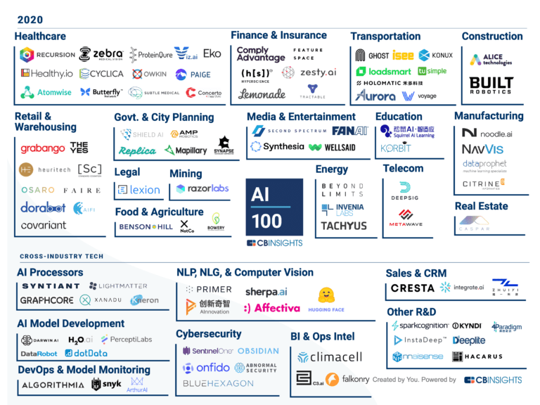
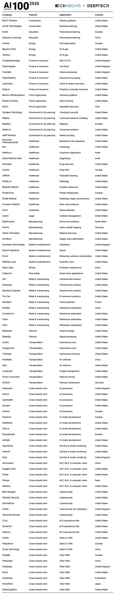

Alan Liu, .
近日全球知名的市场数据研究机构CB Insights发布了AI 100榜单。作为全球人工智能领域最权威的榜单之一，第4届AI 100榜单遴选出了涵盖语音合成、量子机器学习、蛋白质建模等前沿科技领域的全球100家最具潜力初创企业。 中国入选的6家公司分散在无人驾驶、智能物流仓储、智能客服、智能制造、通用AI和教育培训6个独立领域。此外，华人创立的硅谷创业无人驾驶公司图森未来也入选榜单。
2020年的AI 100榜单变动很大，除第四范式外，5家国内公司都是新面孔（禾多科技、Dorabot蓝胖子机器人、追一科技、创新奇智、松鼠AI），前2年火热的计算机视觉公司全部被剔除出了榜单。2019年有6家中国公司上榜（商汤、旷视、依图、第四范式、Momenta、地平线），2018年有7家中国公司入选（今日头条、商汤、旷视、英语流利说、出门问问、寒武纪、优必选），2017年则有4家上榜（碳云智能、出门问问、Rokid、优必选）。
图片来源：CB Insights
我们可以从2020年的榜单中发现商业化布局这条主线。不论是禾多科技、Dorabot、追一科技还是创新奇智，公司都以短期快速商业化作为重点，而2018-2019年，中国的AI行业还在一窝蜂地刷各类算法Benchmark榜单。 我们投资人、创业者、管理层应该如何根据AI 100榜单为经营决策作指引？我们该把这份榜单作为投资指引吗？我们该进入这份榜单涉及的行业创业吗？我们该利用榜单制定科技赋能时间表？
AI 100参照的是上一年度的资本市场热度、估值数据、营收数据来评价公司，缺乏对公司营收天花板、增长率的预测。4年来没有1家中国AI公司能在榜单上出现超过2次，Rokid、出门问问、第四范式、地平线等上榜公司的业务至今不温不火，创业公司的高成长性也伴随着高风险。 我们以2018-2019年大火的计算机视觉行业为例。2018年中国政府投入大笔资金在公共安防领域建立人脸识别抓拍和识别数据库，计算机视觉行业实现了营收和资本的双增长。2019年几大公司均遭遇了估值天花板和业绩天花板，旷视和寒武纪在二级资本市场的表现都难说乐观。
资本泡沫和行业泡沫破碎的时候，行业应用AI赋能传统业务的时机也就到来了。松鼠AI成立了6年，Dorabot成立了5年，追一科技成立了4年，这些公司之前都没有受到资本市场的青睐。现在智能物流仓储、场景特定的无人驾驶进入商业落地加速阶段，技术成熟度、应用整合能力、成本经济性都达到了规模商业化的要求。
图片来源：CB Insights
CB Insights 2020 AI 100榜单全文：CB Insights 2020 AI 100